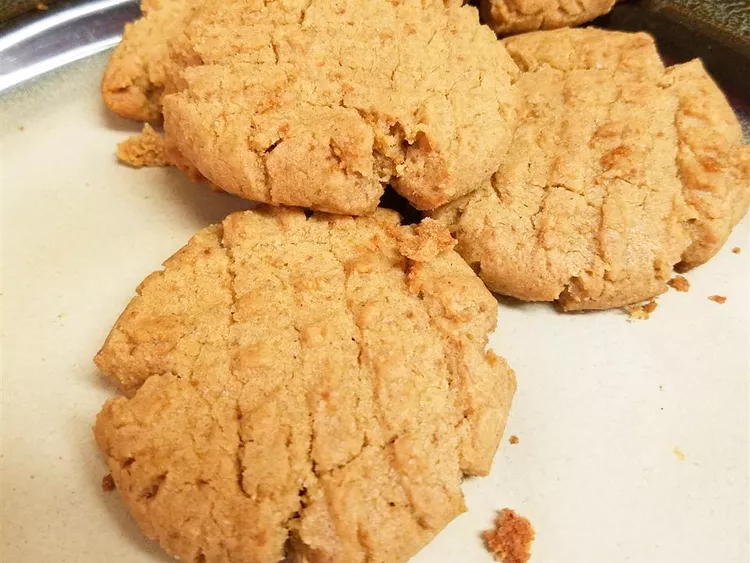

Peanut Butter Cookies

Description
A peanut butter cookie is a flat, crunchy cookie made with peanut butter as the main ingredient. It is characterized by a strong peanut flavor, crumbly texture, and typical surface fork marks.
Ingredients
- 1/2 cup shortening
- 1/2 cup crunchy peanut butter
- 1/2 cup white sugar
- 1/2 cup packed brown sugar
- 1 large egg
- 1 1/4 cups all-purpose flour,plus more as needed
- 3/4 teaspoon baling soda
- 1/4 teaspoon baking powder
- 1/4 teaspoon salt
Description
- Cream shortening, peanut butter, and both sugars in a large bowl with an electric mixer until light and fluffy. Beat in egg until incorporated. Mix flour, baking soda, baking powder, and salt in a separate bowl; gradually stir into peanut butter mixture until combined. Cover and refrigerate dough for at least 1 hour.
- Cream shortening, peanut butter, and both sugars in a large bowl with an electric mixer until light and fluffy. Beat in egg until incorporated. Mix flour, baking soda, baking powder, and salt in a separate bowl; gradually stir into peanut butter mixture until combined. Cover and refrigerate dough for at least 1 hour.
- Roll chilled dough into walnut-sized balls and place 2 inches apart onto baking sheets. Flatten dough balls with a fork dipped in flour to form a crosswise pattern.
- Bake in the preheated oven until edges are set, 10 to 12 minutes. Transfer cookies to a wire rack to cool completely.